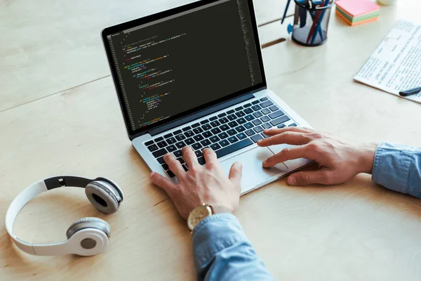
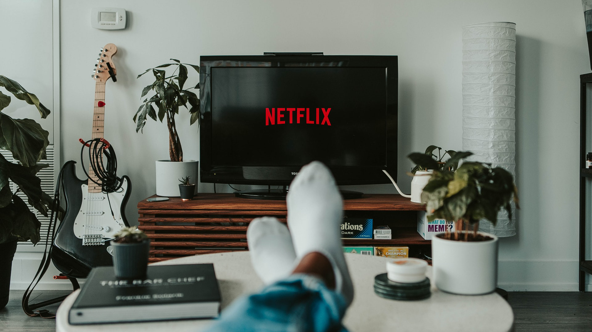
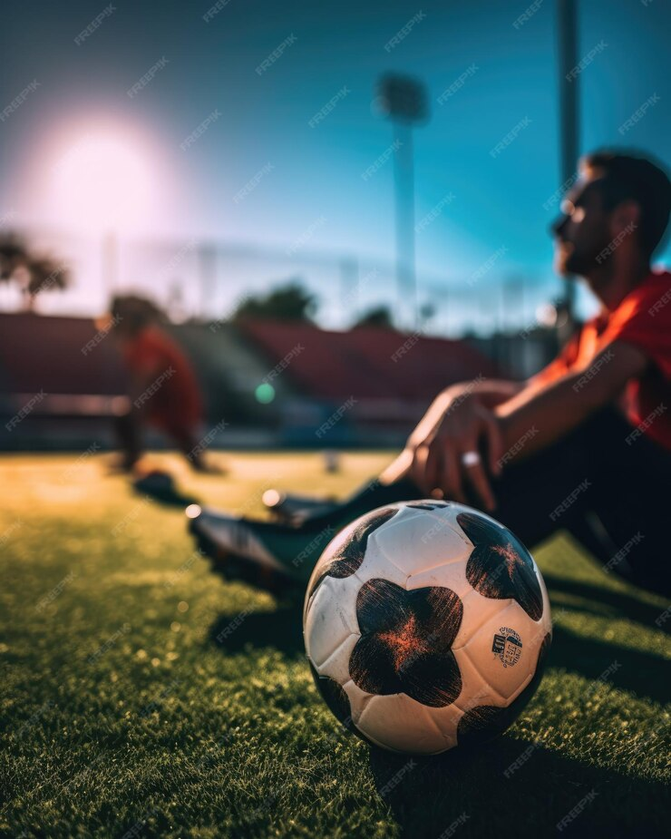

Introduction :
Bonjour ! Je suis un étudiant passionné par plusieurs domaines. Cette page est dédiée à partager mes intérêts et activités favorites. J'espère que vous trouverez cela intéressant !
Mes Passions :

Je suis passionné par le développement web, un univers fascinant où la créativité et la logique se rencontrent pour donner vie à des expériences numériques uniques. Depuis mon plus jeune âge, j’ai toujours été captivé par la manière dont les sites et applications prennent forme, alliant design et performance. Chaque ligne de code que j’écris est pour moi un défi, un moyen de résoudre des problèmes et d'apprendre de nouvelles technologies. J’aime explorer les frameworks, expérimenter avec les langages de programmation, et repousser les limites de ce qui peut être fait sur le web. Ce domaine est en constante évolution, et cette dynamique me pousse à m’améliorer chaque jour. Pour moi, le développement web n’est pas seulement un métier, c’est une véritable passion, une quête perpétuelle pour créer, innover et rendre le web toujours plus accessible et fonctionnel.
Programmation et Développement web
Je suis passionné par le développement web, un univers fascinant où la créativité et la logique se rencontrent pour donner vie à des expériences numériques uniques. Depuis mon plus jeune âge, j’ai toujours été captivé par la manière dont les sites et applications prennent forme, alliant design et performance. Chaque ligne de code que j’écris est pour moi un défi, un moyen de résoudre des problèmes et d'apprendre de nouvelles technologies. J’aime explorer les frameworks, expérimenter avec les langages de programmation, et repousser les limites de ce qui peut être fait sur le web. Ce domaine est en constante évolution, et cette dynamique me pousse à m’améliorer chaque jour. Pour moi, le développement web n’est pas seulement un métier, c’est une véritable passion, une quête perpétuelle pour créer, innover et rendre le web toujours plus accessible et fonctionnel.

Je suis passionné par le regard des films et des séries, un véritable voyage cinématographique qui me permet de m'évader dans des univers variés, captivants et émouvants. Depuis que je suis enfant, je suis fasciné par l'art de raconter des histoires à travers l'image et le son. Chaque film et chaque série est pour moi une occasion d'explorer de nouvelles émotions, de découvrir des cultures et de plonger dans des intrigues qui me tiennent en haleine. J'apprécie particulièrement la richesse des personnages, la complexité des scénarios et l'impact des réalisations visuelles. Que ce soit dans un drame poignant, une comédie légère ou un thriller haletant, je trouve toujours une forme de connexion personnelle avec l'œuvre. Mon amour pour le cinéma et les séries ne se limite pas à la simple distraction ; c'est une passion qui me pousse à analyser les techniques de mise en scène, les jeux d'acteurs, et à réfléchir aux messages profonds que chaque œuvre tente de transmettre.
Regarder des series et des films
Je suis passionné par le regard des films et des séries, un véritable voyage cinématographique qui me permet de m'évader dans des univers variés, captivants et émouvants. Depuis que je suis enfant, je suis fasciné par l'art de raconter des histoires à travers l'image et le son. Chaque film et chaque série est pour moi une occasion d'explorer de nouvelles émotions, de découvrir des cultures et de plonger dans des intrigues qui me tiennent en haleine. J'apprécie particulièrement la richesse des personnages, la complexité des scénarios et l'impact des réalisations visuelles. Que ce soit dans un drame poignant, une comédie légère ou un thriller haletant, je trouve toujours une forme de connexion personnelle avec l'œuvre. Mon amour pour le cinéma et les séries ne se limite pas à la simple distraction ; c'est une passion qui me pousse à analyser les techniques de mise en scène, les jeux d'acteurs, et à réfléchir aux messages profonds que chaque œuvre tente de transmettre.

Je suis passionné par la pratique du sport, et plus particulièrement par le football, qui occupe une place spéciale dans ma vie. Depuis mon enfance, le ballon a toujours été mon compagnon de jeu, et chaque match, qu'il soit entre amis ou en compétition, est pour moi un moment intense et enrichissant. Le football m'apprend la discipline, le travail d'équipe et la persévérance. J'adore l’adrénaline d’une course vers le but, la stratégie du jeu, et l’émotion de marquer ou de défendre un objectif crucial. Plus qu'un simple jeu, le football est pour moi une véritable école de vie, où chaque entraînement me permet de me dépasser, de mieux comprendre les autres, et de repousser mes limites physiques et mentales. Mon amour pour ce sport ne se limite pas à la pratique, car j’aime aussi suivre les matchs, analyser les stratégies et m'inspirer des grands joueurs.
Pratiquer le sport Spécificement le Football
Je suis passionné par la pratique du sport, et plus particulièrement par le football, qui occupe une place spéciale dans ma vie. Depuis mon enfance, le ballon a toujours été mon compagnon de jeu, et chaque match, qu'il soit entre amis ou en compétition, est pour moi un moment intense et enrichissant. Le football m'apprend la discipline, le travail d'équipe et la persévérance. J'adore l’adrénaline d’une course vers le but, la stratégie du jeu, et l’émotion de marquer ou de défendre un objectif crucial. Plus qu'un simple jeu, le football est pour moi une véritable école de vie, où chaque entraînement me permet de me dépasser, de mieux comprendre les autres, et de repousser mes limites physiques et mentales. Mon amour pour ce sport ne se limite pas à la pratique, car j’aime aussi suivre les matchs, analyser les stratégies et m'inspirer des grands joueurs.

Supporter mon équipe au stade
Je suis passionné par le support de mon équipe, et rien ne me procure autant d’émotions que d’être présent au stade pour encourager mes joueurs. Chaque match est un moment unique où je ressens l’énergie collective des supporters, l'excitation de la foule et la tension palpable dans l’air. La chaleur des chants, des applaudissements et des encouragements crée une atmosphère indescriptible, où je me sens totalement connecté à l’équipe, aux autres supporters, et à l’histoire de notre club. Être au stade, c’est bien plus qu’un simple spectacle sportif, c’est une expérience intense où chaque action sur le terrain me fait vibrer. Peu importe les résultats, mon engagement envers mon équipe est inébranlable, car je crois en la force de la solidarité et en l'importance de soutenir nos joueurs dans les moments les plus difficiles comme les plus heureux.
Merci d'avoir consulté mes Passions. N'hésitez pas à me contacter pour plus d'informations !